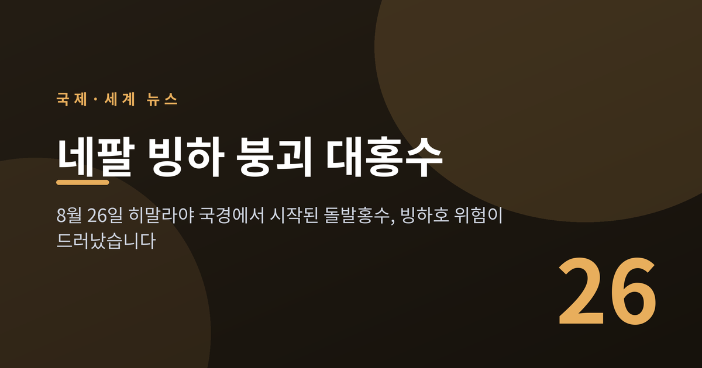
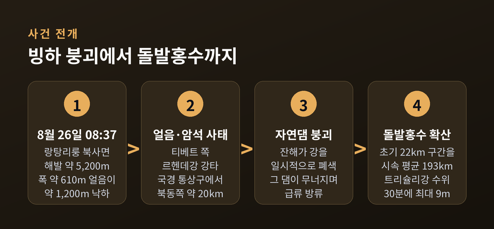
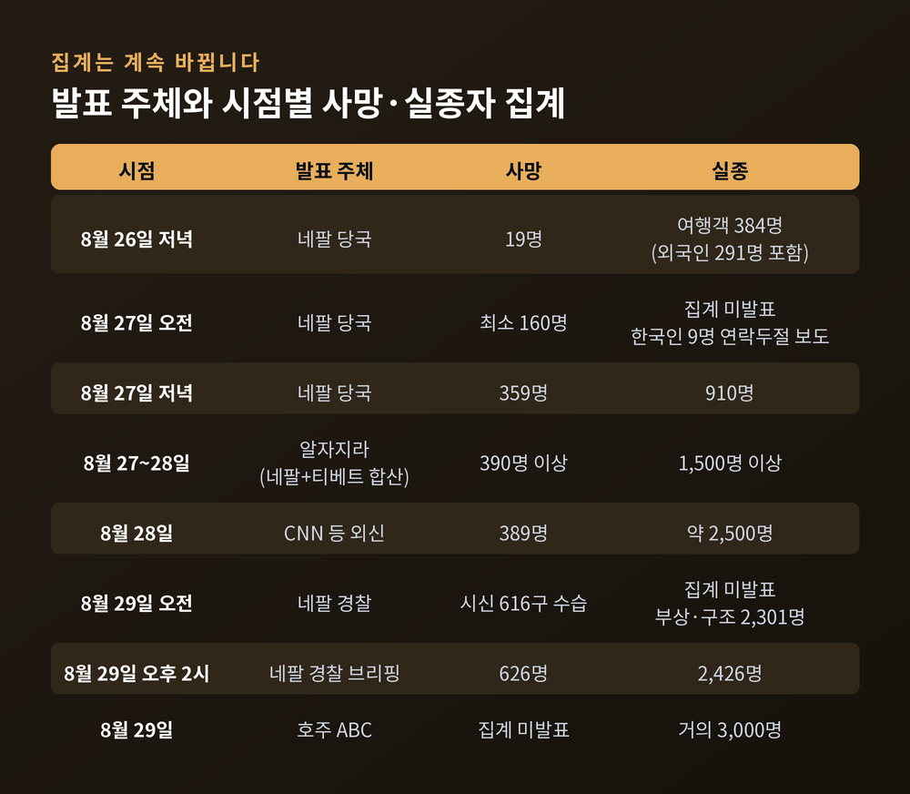
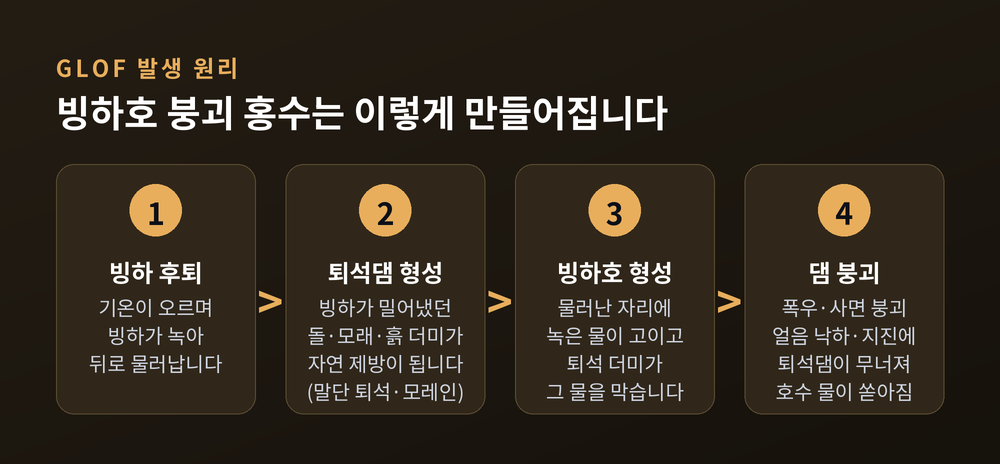
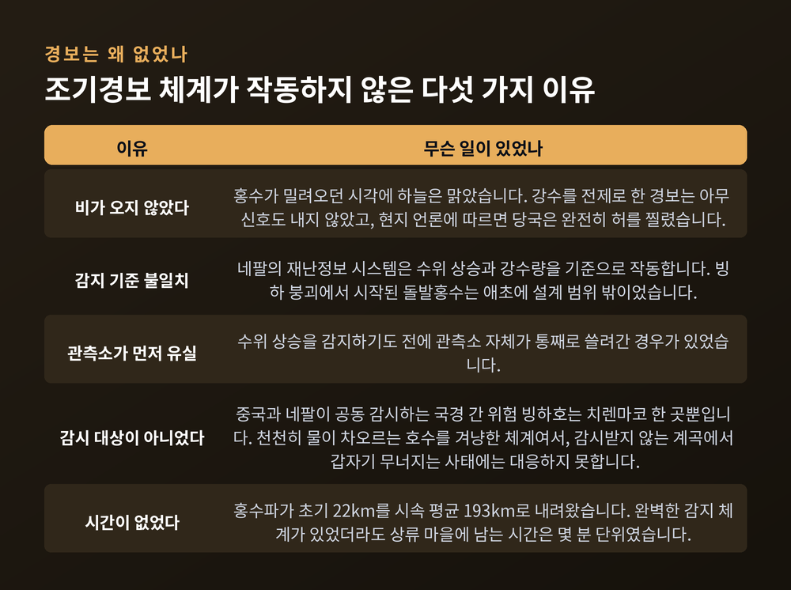
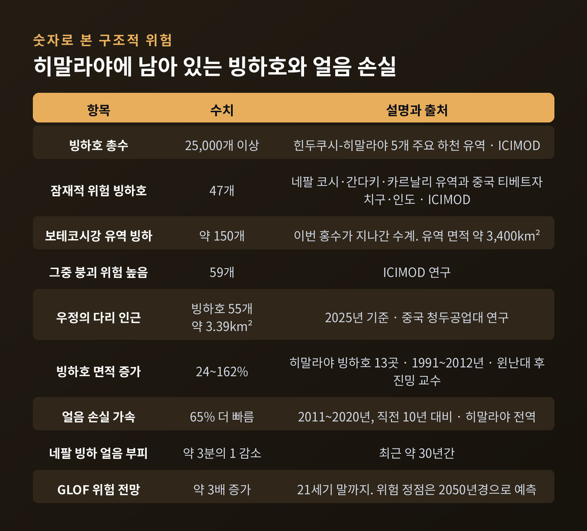

네팔 빙하 붕괴 대홍수, 히말라야 빙하호 위험이 드러난 이유

2026년 8월 26일 오전, 네팔과 중국 티베트 국경의 히말라야 고지대에서 빙하가 무너졌습니다. 그 뒤 사흘 동안 국경 양쪽에서 수백 명이 목숨을 잃었고, 수천 명의 행방이 확인되지 않고 있습니다. 이번 글에서는 무슨 일이 있었고, 왜 이 재난이 개별 사고가 아닌 구조적 경고로 읽히는지를 정리해 보겠습니다.
세 줄 요약
- 8월 26일 오전 8시 37분, 랑탕리룽 봉우리 북사면의 빙하 일부가 무너져 강을 막았다가 그 자연댐이 터지면서 돌발홍수가 발생했습니다.
- 8월 29일 네팔 경찰 집계 기준 사망 616~626명, 실종자는 출처에 따라 2,000명대에서 3,000명 가까이로 편차가 큽니다. 한국인 9명도 연락이 닿지 않고 있습니다.
- 히말라야에는 위험도가 높은 빙하호가 수십 개 더 있고, 조기경보 체계는 이번 유형의 재난을 감지하지 못했습니다.
8월 26일 오전 8시 37분, 무슨 일이 있었나
사건은 비 한 방울 없는 아침에 시작됐습니다.
네팔 코다리에서 북서쪽으로 약 55km 떨어진 국경 지대, 랑탕리룽 봉우리 북사면 해발 약 5,200m 지점에서 빙하 말단부가 떨어져 나갔습니다. 위성영상 분석에 따르면 폭 약 610m 구간의 얼음이 약 1,200m 아래 계곡 바닥으로 낙하했습니다.
충격은 지구 반대편 지진계에까지 잡혔습니다. 미국지질조사국(USGS)은 이 신호를 처음에 규모 4.4 지진으로 보고했습니다. 그러나 장주기 지진파를 다시 분석한 뒤 "지진이 아니라 산사태가 만들어낸 신호"라고 정정했고, 최종적으로 규모 5.2에 해당하는 신호로 기록했습니다.
떨어져 나온 얼음과 암석은 티베트 쪽 르헨데강을 강타했습니다. 국경 통상구에서 북동쪽으로 약 20km 떨어진 지점입니다. 잔해가 강을 일시적으로 틀어막아 자연댐을 만들었고, 그 댐이 무너지면서 물과 토사가 한꺼번에 쏟아졌습니다.
물길은 르헨데강에서 보테코시강으로, 다시 트리슐리강으로 이어졌습니다. 홍수파는 초기 22km 구간을 시속 평균 193km로 내려왔습니다. 22km를 약 6분 50초 만에 통과한 속도입니다. 트리슐리강 수위는 30분 만에 최대 9m까지 올랐습니다.

피해 집계는 왜 계속 바뀌나
이 재난의 피해 규모를 한 문장으로 말하기는 아직 어렵습니다. 집계가 사흘 내내 상향됐고, 지금도 확정되지 않았기 때문입니다.
8월 26일 저녁 네팔 당국이 밝힌 사망자는 19명이었습니다. 이튿날 오전에는 최소 160명, 같은 날 저녁에는 359명으로 늘었습니다. 8월 29일 오전 네팔 경찰은 시신 616구를 수습했다고 밝혔고, 같은 날 오후 브리핑에서는 사망 626명·실종 2,426명을 발표했습니다.
실종자 수는 특히 출처마다 다릅니다. 알자지라는 8월 27~28일 기준 1,500명 이상으로, CNN은 28일 기준 약 2,500명으로, 호주 ABC는 29일 기준 거의 3,000명으로 전했습니다. 신원 확인이 끝나지 않았고 중복 신고와 외국인 명단 확인 지연이 겹친 결과로 보입니다.
지역별 사망자 분포는 이 재난의 성격을 잘 보여줍니다. 붕괴 지점에서 가장 가까운 라수와의 사망자는 13명이었습니다. 반면 한참 하류 저지대인 치트완에서 233명, 나왈파라시(동)에서 158명이 확인됐습니다. 산에서 시작된 재난이 강을 따라 수백 km를 이동해 평지의 마을들을 덮친 것입니다.
기반시설 피해도 큽니다. 다리 32개와 도로 약 40km가 유실됐고, 누와코트 베트라와티에서 라수와가디 국경 통상구까지 이어지는 도로는 전 구간이 쓸려나갔습니다. 티베트와 네팔을 잇는 핵심 통로입니다.
한국인 피해도 확인됐습니다. 카트만두 북서쪽 약 70km의 '상부 트리슐리-1(UT-1)' 수력발전소 건설 현장에서 근무하던 한국인 9명(한국남동발전 3명, 두산에너빌리티 관련 6명)의 연락이 두절됐습니다. 정부는 외교부·경찰청·소방청으로 구성된 합동 신속대응팀을 파견했습니다. 별도로 고립됐던 한국인 10명은 안전지대로 대피한 것으로 확인됐고, 임시대피소에 남아 있던 1명도 8월 28일 네팔군 헬기로 이송됐습니다.

원인은 GLOF인가 — 아직 단정할 수 없습니다
초기 보도는 대부분 이 사고를 빙하호 붕괴 홍수, 이른바 GLOF로 설명했습니다. 국내 매체들도 8월 27일자 기사에서 '빙하호 범람 홍수'라는 표현을 썼습니다.
그러나 이후 전문가 분석은 결이 다릅니다. 산사태 연구로 잘 알려진 데이브 페틀리 교수는 미국지구물리학회(AGU) 매체 Eos에 쓴 글에서 이렇게 밝혔습니다.
"이것이 빙하호 붕괴 홍수(GLOF)였다는 증거는 없다."
그는 막대한 물의 출처를 두고 초기 붕괴 에너지로 녹은 얼음, 이동 중 휩쓸려 들어간 퇴적물 속의 물, 그리고 하천수가 복합된 결과일 수 있다고 보면서도, 이 역시 추측이라고 분명히 덧붙였습니다. 사건을 제대로 이해하려면 국제 공동 연구팀이 필요하고, 그 팀이 이미 작업을 시작했다고도 했습니다.
정리하면 현재 유력한 분석은 '빙하 붕괴 → 암석·얼음 사태 → 하천 일시 폐색 → 자연댐 붕괴 → 돌발홍수'라는 연쇄입니다. GLOF는 이번 사건의 확정된 원인이 아니라, 초기 추정이자 이 지역의 구조적 위험을 설명하는 배경 개념으로 보는 편이 정확합니다.
그렇다면 GLOF란 무엇인가
이번 사건의 원인이 아니더라도, GLOF는 히말라야를 이해하는 데 빠뜨릴 수 없는 개념입니다. 원리는 네 단계로 나뉩니다.
첫째, 빙하가 물러납니다. 기온이 오르면 빙하는 녹으며 뒤로 후퇴합니다.
둘째, 퇴석 더미가 남습니다. 빙하가 전진하던 시절 앞으로 밀어냈던 돌과 모래, 흙 더미가 그대로 남아 자연 제방 역할을 합니다. 이를 말단 퇴석, 모레인이라 부릅니다.
셋째, 호수가 생깁니다. 빙하가 물러난 자리에 녹은 물이 고이고, 퇴석 더미가 그 물을 막아 세웁니다.
넷째, 댐이 무너집니다. 퇴석 댐은 콘크리트가 아니라 다져진 흙과 돌일 뿐입니다. 폭우, 인근 사면 붕괴가 만든 파도, 얼음 덩어리 낙하, 지진, 내부 얼음의 융해 같은 자극에 한순간 무너집니다. 그러면 호수 물이 통째로 쏟아져 나오고, 계곡의 토사와 바위를 휩쓸며 하류로 갈수록 부피와 파괴력을 키웁니다.
작은 호수라고 안심할 수 없다는 점이 중요합니다. 2024년 8월 네팔 동부 솔루쿰부의 티안보 호수는 면적이 0.05㎢에 불과했습니다. 그런데도 연쇄 홍수로 하류 기반시설이 파괴되고 최소 135명이 이재민이 됐습니다. 2025년 7월 어퍼 무스탕에서는 0.016㎢짜리 빙하호가 무너져 하류 35km 구간에 홍수를 일으키고 다리 4개를 파손했습니다.

보테코시강은 처음이 아니었습니다
이번 홍수가 지나간 보테코시강 유역은 오래전부터 같은 일을 반복해 겪었습니다.
1981년 7월, 중국·네팔 국경에서 14km 떨어진 치렌마코 빙하호가 범람했습니다. 한 시간 만에 약 2,000만㎥의 물이 쏟아졌고, 보테코시강 네팔 구간 30km에서 수위가 30m 올랐습니다. 수력발전소 한 곳과 고속도로, 중국·네팔 '우정의 다리'가 파괴됐습니다. 『네이처』에 실린 한 연구는 이 홍수로 네팔에서 약 200명이 숨진 것으로 추정합니다. 당시에는 몬순 홍수로 여겨졌고, 빙하 붕괴가 원인이었다는 사실은 나중에야 밝혀졌습니다.
지질학자들은 1935년과 1964년에도 비슷한 홍수가 있었으며 약 30년 주기로 반복된다는 연구 결과를 내놓았습니다.
문제는 그 주기가 짧아지고 있다는 점입니다. 2016년 7월 티베트 공바통샤호 홍수로 목동 9명이 숨졌습니다. 2025년 5월에는 네팔 북서부 틸가온 인근에서 빙하호 두 개가 무너졌습니다. 같은 해 7월 8일에는 이번과 같은 지역인 라수와가디에서 빙하 붕괴 홍수가 나 최소 9명이 숨지고 수십 명이 실종됐으며, 라수와와 중국을 잇던 우정의 다리가 쓸려갔습니다.
예전에는 30년에 한 번 오는 재난이었습니다. 지금은 매년 어딘가에서 일어나고 있습니다.
왜 경보가 울리지 않았나
가장 뼈아픈 대목은 사실상 아무 경보도 없었다는 점입니다. 이유는 하나가 아닙니다.
첫째, 비가 오지 않았습니다. 현지 언론에 따르면 당국은 완전히 허를 찔렸습니다. 홍수가 밀려오던 시각에 하늘은 맑았습니다.
둘째, 감지 기준이 맞지 않았습니다. 네팔의 재난정보 시스템은 수위 상승과 강수량을 기준으로 작동합니다. 빙하 붕괴로 시작된 돌발홍수는 애초에 설계 범위 밖이었습니다.
셋째, 관측소가 먼저 사라졌습니다. 수위 상승을 감지하기도 전에 관측소 자체가 통째로 쓸려간 경우가 있었습니다.
넷째, 애초에 감시 대상이 아니었습니다. 중국과 네팔이 공동 감시하는 국경 간 위험 빙하호는 치렌마코 한 곳뿐입니다. 이 체계는 천천히 물이 차오르는 호수를 겨냥해 만들어졌습니다. 감시받지 않는 계곡에서 갑자기 무너지는 사태에는 대응할 수 없습니다.
여기에 물리적 한계도 겹칩니다. 홍수파가 시속 193km로 내려왔다면, 완벽한 감지 체계가 있었더라도 상류 마을에 남는 시간은 몇 분 단위입니다. 기술만으로 메울 수 있는 간극이 아니라는 뜻입니다.

국경을 넘는 재난, 공조는 어디까지 왔나
이 재난은 티베트에서 시작해 네팔을 관통하고 인도까지 영향을 미쳤습니다. 트리슐리강은 나라야니강과 합류해 인도 비하르주로 넘어가 간다크강이 됩니다. 인도는 비하르·우타르프라데시·우타라칸드주에서 수천 명을 대피시켰습니다.
문제는 재난이 국경을 넘는 데 비해 정보는 그러지 못한다는 점입니다.
티베트 고원의 빙하·수문 데이터는 중국이 전략적으로 민감한 정보로 취급해 엄격히 관리합니다. 네팔에는 중국 측에서 빙하호·하천 데이터를 실시간으로 받을 제도적 장치가 없고, 네팔 관리들이 정보 비공개를 문제 삼은 적도 있습니다. 접경지대는 어디서나 안보 구역으로 먼저 관리되고, 그 결과 재난 대응이 뒷전으로 밀리는 경향이 있다는 지적이 나옵니다.
다만 이번 대응 자체는 양측 모두 신속했다는 점도 함께 봐야 합니다.
중국에서는 시진핑 국가주석이 티베트 실종자에 대한 총력 수색을 지시했고, 리창 총리가 8월 27일 재해 지역을 직접 방문해 구조를 지휘했습니다. 다만 깊게 쌓인 퇴적물 탓에 국경 지대 접근이 지연되고 있습니다. 네팔에서는 발렌드라 샤 총리가 누와코트 비두르를 찾아 상황을 점검했고, 8월 29일 기준 보안요원 1만 5,000명이 투입돼 4,400명 이상을 구조했습니다.
국제사회 지원도 이어졌습니다. 인도는 약 10톤 규모 구호물자와 전문 터널 구조팀·의료지원팀을 보냈고, 국제적십자사연맹은 100만 스위스프랑, 유엔은 중앙긴급대응기금에서 200만 달러를 배정했습니다. 호주는 360만 달러, 미국은 50만 달러와 재난대응 자문관을 지원했습니다. EU는 코페르니쿠스 긴급관리서비스를 가동해 위성영상으로 피해 지역을 지도화하고 있습니다.
전문가들이 공통적으로 제안하는 해법은 분명합니다. 중국·네팔·인도·부탄 등 히말라야 이해당사국이 빙권 데이터 공유, 공동 과학 관측, 위성 기반 조기경보, 인프라 위험 평가에 관한 더 강한 협정을 맺어야 한다는 것입니다.
기후변화는 얼마나 관련이 있나
이 대목은 신중하게 다뤄야 합니다.
말할 수 있는 것부터 보겠습니다. 힌두쿠시-히말라야 지역 빙하는 2011~2020년 10년간 그 이전 10년보다 65% 빠른 속도로 얼음을 잃었습니다. 네팔 빙하는 약 30년 만에 얼음 부피의 약 3분의 1이 사라졌습니다. 위성 관측 결과 이번에 무너진 빙하 주변은 붕괴 이전 이례적으로 따뜻했고, 적설이 크게 줄어 맨 얼음이 더 많이 드러나 있었습니다.
뉴질랜드 지구과학연구소의 사이먼 콕스 수석과학자는 기후변화가 고산지대의 암석과 얼음을 불안정하게 만드는 조건을 만들어내고 있으며, 그 결과 이런 붕괴와 연쇄 재해가 더 잦아진다고 설명했습니다. 특히 영구동토 해빙이 지목됩니다. 수천 년간 산사면을 붙들어온 얼어붙은 흙과 암석이 녹으면서 사면이 점점 불안정해지기 때문입니다.
반면 말할 수 없는 것도 분명합니다. 과학자들은 이번 빙하 붕괴의 방아쇠가 정확히 무엇이었는지 아직 조사 중이며, 기후변화가 이 개별 사건에 얼마나 기여했는지 판단하기에는 이르다는 입장입니다. 직접적 연결은 아직 확립되지 않았습니다.
개별 사건의 인과와 전체 추세는 다른 층위의 이야기입니다. 추세는 이미 뚜렷하고, 이번 사건은 그 추세 위에서 일어났습니다.
남아 있는 위험과 앞으로의 전망
당장의 위험부터 짚겠습니다. 네팔 재난당국은 홍수 발생 지점에 새로운 호수가 형성돼 수위가 오르고 있다고 밝혔습니다. 이 호수가 터지면 하류에 추가 홍수가 발생할 수 있습니다. 8월 29일에는 폭우로 트리슐리 수위가 다시 올라 헬기 수색이 일시 중단됐고, 강변 주민들이 예방 차원에서 대피했습니다.
수색은 갈 길이 멉니다. 네팔 전국 영안실 수용 능력은 약 350구에 불과합니다. 치트완은 이미 포화 상태이고 포카라 병원 영안실도 차오르고 있어 임시 시설을 세웠습니다. 경찰은 시신을 수습해 근접 촬영과 세척을 거쳐 태그를 붙이고, 실온 0도로 유지되는 임시 시신관리소에 안치한 뒤 실종자 가족이 오면 사진을 대조해 인계하는 방식으로 운영하고 있습니다.
구조적 위험은 더 길게 남습니다.
힌두쿠시-히말라야 지역에는 빙하호가 25,000개 이상 있습니다. ICIMOD는 네팔의 코시·간다키·카르날리 유역과 중국 티베트자치구, 인도에 걸쳐 잠재적 위험 빙하호 47개를 지목했습니다. 국내 보도가 말하는 '위험 빙하호 50여 개'가 이 숫자입니다. 이번 사고가 난 보테코시강 유역만 놓고 봐도 면적 약 3,400㎢에 빙하 약 150개가 있고, ICIMOD는 그중 59개를 붕괴 위험이 매우 높은 것으로 분류했습니다.
중국 청두공업대 연구는 1981년 홍수 피해를 입었던 우정의 다리 인근에 2025년 기준 총면적 약 3.39㎢의 빙하호 55개가 분포한다고 분석했습니다. 윈난대 후진밍 교수 연구에 따르면 히말라야 일대 빙하호 13개의 면적이 1991~2012년 사이 24~162% 늘었습니다.
전망은 낙관적이지 않습니다. 학계는 이 지역의 GLOF 위험이 21세기 말까지 약 3배로 늘고, 위험이 정점에 이르는 시기는 2050년경일 것으로 봅니다.

끝으로 한 마디만 더 드리겠습니다.
이번 재난에서 확정된 것은 많지 않습니다. 원인도 조사 중이고, 실종자 수도 아직 좁혀지지 않았습니다. 그래서 더 조심스럽게 써야 하는 이야기입니다. 다만 확정되지 않은 것과 이미 알고 있던 것은 구분해야 합니다.
히말라야의 얼음이 빠르게 줄고 있다는 사실, 위험한 빙하호가 수십 개 더 있다는 사실, 국경 너머의 데이터가 하류로 흘러오지 않는다는 사실 — 이 세 가지는 이번 사고 전부터 알려져 있었습니다.
경고가 없었던 것이 아니라, 경보가 없었을 뿐입니다.
수색이 계속되는 동안, 희생자와 가족들에게 애도를 전합니다.